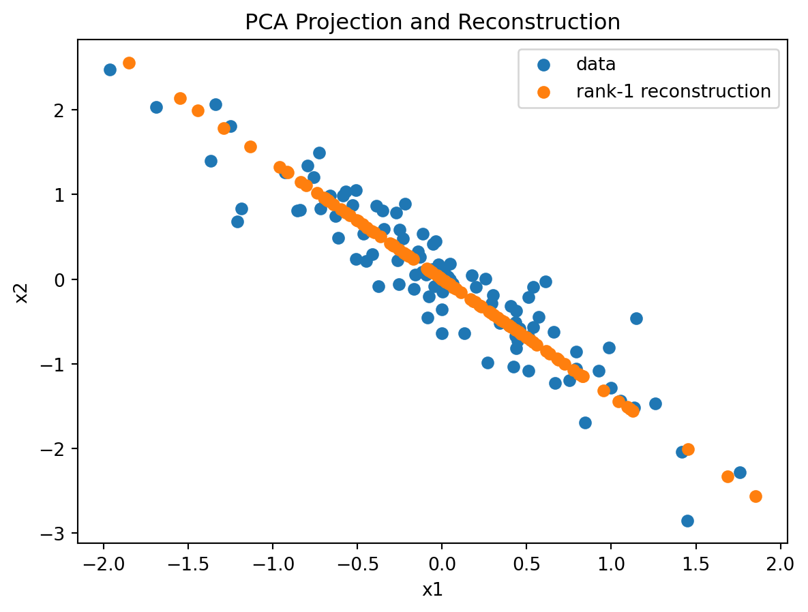
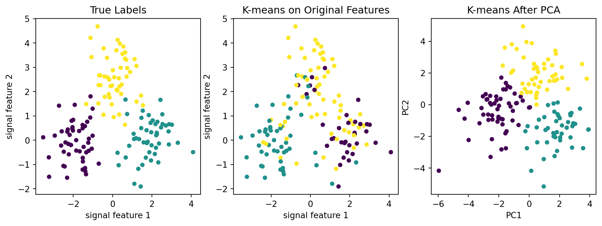

In the supervised dimension-reduction chapter, PCA appeared inside principal component regression (PCR). There the workflow was
\[
X \longrightarrow Z=XV_m \longrightarrow \hat y.
\]
The principal components were useful only if they helped predict the response. The number of components was therefore chosen by cross-validation against prediction error.
This chapter uses the same algebra for a different purpose. There is no response \(y\). The workflow is instead
\[
X \longrightarrow Z \longrightarrow \hat X.
\]
The question is no longer “does the reduced representation predict \(y\)?” but “what structure of the data matrix does the reduced representation preserve?” This change makes reconstruction, compression, visualization, denoising, and distance preservation more central than prediction.
We will use PCA as the main example, revisiting PCA, SVD, and related concepts only where they help explain dimension reduction as a way of building useful low-dimensional representations of a data matrix.
13.1 How to Read the Data Matrix
Let \(X\in\mathbb R^{n\times p}\) contain \(n\) observations and \(p\) features. We usually center the columns before applying PCA, so the origin represents the sample mean.
This \(X\) has two complementary geometric views. The coordinates of a vector determine the space it lives in. Therefore
A row has one coordinate for each feature, so it is a vector in feature space \(\mathbb R^p\).
A column has one coordinate for each observation, so it is a vector in observation space \(\mathbb R^n\).
This is not only notation. It determines which objects can be compared, combined, or projected. Row operations compare observations by their feature values. Column operations compare features by their behavior across observations.
13.1.1 Rows: observations in feature space
The \(i\)-th row
\[
x_i^\top=\mqty[x_{i1},\ldots,x_{ip}]
\]
is one observation represented as a point in feature space \(\mathbb R^p\). The axes of this space are the features. For example, if the features are height, weight, and age, then each person is a point in a three-dimensional feature space.
In this view, we ask questions about observations:
Which observations are close to each other?
Which observations are outliers?
Can the observations be represented well by a lower-dimensional plane?
Distances between rows \(\norm{x_i-x_\ell}\) compare observations. Clustering, nearest neighbors, and visualization usually start from this row-side view. Dimension reduction replaces each high-dimensional row \(x_i^\top\) with a lower-dimensional row \(z_i^\top\).
13.1.2 Columns: features in observation space
The \(j\)-th column
\[
X_j=\mqty[x_{1j},\ldots,x_{nj}]^\top
\]
is one feature measured across all observations. It is a vector in observation space \(\mathbb R^n\). The axes of this space are the individual observations. For example, the height column records the height value for person 1, person 2, and so on. In that sense, height is a point in an \(n\)-dimensional space whose coordinates are people.
In this view, we ask questions about features:
Which features vary together across observations?
Which features are redundant?
Which weighted combinations of features create useful new features?
Inner products between columns \(X_j^\top X_k\) measure feature co-movement. After centering, \(X_j^\top X_k/(n-1)\) is the sample covariance between features \(j\) and \(k\). After standardizing columns, the angle between \(X_j\) and \(X_k\) is related to their correlation.
13.1.3 A matrix is a bridge between two spaces
Let \(e_i\in\mathbb R^n\) select observation \(i\), and let \(f_j\in\mathbb R^p\) select feature \(j\). Then
\[
e_i^\top X f_j=x_{ij}.
\]
This single number connects the two spaces: it is the measurement of feature \(j\) on observation \(i\). Reading across a row fixes an observation and varies the feature index. Reading down a column fixes a feature and varies the observation index.
More generally, \(X\) can combine many features or many observations at once. If \(u\in\mathbb R^n\) and \(v\in\mathbb R^p\), then
\[
Xv\in\mathbb R^n,\qquad u^\top X\in\mathbb R^p,\qquad u^\top Xv\in\mathbb R.
\]
The vector \(v\) gives weights for the features. Multiplying \(Xv\) makes one new feature column, with one value for each observation.
The vector \(u\) gives weights for the observations. Multiplying \(u^\top X\) makes one new row, with one value for each feature.
Example 13.1 (Constructing a feature with \(Xv\)) Suppose the rows of \(X\) are people and the columns are standardized features such as height, weight, and age. To construct a new feature, choose weights for the columns. For example, let
\[
v=
\mqty[0.6\\0.8\\0\\\vdots\\0],
\]
where the first two coordinates correspond to standardized height and standardized weight. Then
\[
Xv=0.6X_1+0.8X_2.
\]
This is a new feature column in observation space \(\mathbb R^n\). Its \(i\)-th entry is
\[
x_i^\top v=0.6x_{i1}+0.8x_{i2},
\]
a size-like score for person \(i\). The vector \(v\) is the recipe for the new feature, and \(Xv\) lists that feature’s values for all people.
Example 13.2 (Aggregating observations with \(u^\top X\)) Now mix rows instead of columns. The row \(x_i^\top\) contains all feature values for person \(i\). If
\[
u=
\mqty[1/2\\1/2\\0\\\vdots\\0],
\]
then left-multiplying by \(u^\top\) gives
\[
u^\top X=\frac12x_1^\top+\frac12x_2^\top,
\]
the average values across all features for the first two people. This is still a vector in feature space \(\mathbb R^p\): it has one coordinate for height, one for weight, one for age, and so on.
If instead
\[
u=
\mqty[1/2\\-1/2\\0\\\vdots\\0],
\]
then
\[
u^\top X=\frac12x_1^\top-\frac12x_2^\top,
\]
which is a contrast between the first two people across all features. Positive entries show features where person 1 is larger than person 2, and negative entries show features where person 2 is larger than person 1.
13.1.4 How to Interpret Principal Component Vectors
To interpret the principal component vectors, start from the singular value decomposition of the centered data matrix \(X\in\mathbb R^{n\times p}\). If \(\operatorname{rank}(X)=r\), then
\[
X=UDV^\top,\qquad Z=XV=UD,
\] where
\(U\in\mathbb R^{n\times r}\) and \(V\in\mathbb R^{p\times r}\) have orthonormal columns;
\(D=\operatorname{diag}(d_1,\ldots,d_r)\) contains the positive singular values in decreasing order.
The columns of \(V\) are the principal component directions in feature space. For component \(j\),
This is exactly the operation \(Xv\) discussed above: PCA chooses a special feature-space direction \(v_j\) and uses \(Xv_j\) to combine the original feature columns into one new score column.
The vector \(v_j\) is the loading vector. It gives the weights used to combine the original feature columns:
\[
Z_j
=
v_{1j}X_1+\cdots+v_{pj}X_p.
\]
The vector \(Z_j\) is the score vector. It records the value of this new component feature for every observation:
\[
z_{ij}=x_i^\top v_j.
\]
Equivalently, since \(Z=UD\), we have \(Z_j=d_ju_j\). The column \(u_j\) gives the normalized score direction in observation space, while the singular value \(d_j\) gives its scale.
Example 13.3 (Reading loading signs and magnitudes) Suppose one component uses two standardized features:
\[
z_{i1}=0.7x_{i1}+0.6x_{i2}.
\]
The two loadings have similar magnitude and the same sign. Both features therefore contribute strongly, and both push the score in the same direction: increasing either feature increases \(z_{i1}\), holding the other feature fixed. Observations score high when both features are high, and low when both features are low.
Now compare this with
\[
z_{i1}=0.7x_{i1}-0.6x_{i2}.
\]
The magnitudes are still similar, so both features matter. But the signs are opposite: the first feature increases the score, while the second decreases it. Observations score high when \(x_{i1}\) is large relative to \(x_{i2}\), and low when \(x_{i2}\) is large relative to \(x_{i1}\). The component is a contrast between the two features.
A feature with a near-zero loading would contribute little to this component. The overall sign is arbitrary: multiplying both the loading vector and the score vector by \(-1\) gives the same component. Therefore, signs should be read relative to each other within the same component.
Thus a principal component vector is not just a list of coefficients. It is a direction in feature space, and its entries tell us how to combine the original features to form a new score column. Entries with the same sign capture shared variation among features, while entries with opposite signs define a contrast between features.
Definition 13.1 (Explained variance) For centered data, the variance explained by component \(j\) is
As mentioned in PCR section, PCA is implemented by sklearn.decomposition.PCA. The mathematical objects introduced above correspond to the attributes and methods of a fitted PCA(n_components=m) object as follows:
Mathematical object
sklearn attribute or method
\(V_m^\top\in\mathbb R^{m\times p}\)
pca.components_
\((d_1,\ldots,d_m)\)
pca.singular_values_
\(d_j^2/(n-1)\)
pca.explained_variance_
\(\dfrac{d_j^2}{\sum_{k=1}^r d_k^2}\)
pca.explained_variance_ratio_
\(Z_m=X_cV_m=U_mD_m\)
pca.transform(X)
In particular, each row of pca.components_ is one loading vector \(v_j^\top\). Thus pca.components_ corresponds to \(V_m^\top\), while pca.components_.T corresponds to \(V_m\).
NoteCentering notation
sklearn accepts a raw data matrix \(X\) and centers it internally. Let \(\mu\) be the column-wise mean of \(X\) and let \(X_c=X-\mu\). Then pca.mean_ stores \(\mu\), and the SVD underlying PCA is applied to the centered matrix \(X_c=UDV^\top\). Therefore, pca.transform(X) gives \(X_cV_m=U_mD_m\).
In other words, to reconstruct the original \(X\) (as discussed in the following sections), you need to add \(\mu\) back afterward.
13.2 PCA as Reconstruction
With loadings and scores in place, PCA can be read as a reconstruction method. Assume \(X\) is centered and has rank \(r\). Its singular value decomposition is
This is the rank-\(m\) PCA reconstruction of \(X\). It first builds \(m\) new derived features,
\[
Z_m=(Xv_1,\ldots,Xv_m),
\]
then maps those \(m\) score columns back to the original feature space. In this sense, PCA compression replaces the original \(p\) features by \(m\) carefully chosen feature combinations.
This is the unsupervised meaning of PCA: among all \(m\)-dimensional linear representations, PCA gives the best squared-error reconstruction of the centered data matrix.
ImportantPCA optimizes reconstruction, not every downstream task
PCA preserves directions with large variance because those directions minimize squared reconstruction error. This does not guarantee that the leading components preserve class separation, rare groups, causal structure, or predictive signal.
If we use the PCA scores as predictors in a linear regression, we obtain principal component regression (PCR). PCR adds a supervised prediction step, and the number of retained components may be selected using \(y\), but the PCA directions themselves are still chosen without using \(y\).
13.2.1 A Two-Dimensional Reconstruction Example
The dataset is generated in the following way. To make the later PCA workflow simpler, we center the data from the beginning.
We perform PCA and inverse-transform the one-dimensional scores to reconstruct the data in the original feature space.
from sklearn.decomposition import PCAimport matplotlib.pyplot as pltpca_1d = PCA(n_components=1)score_1d = pca_1d.fit_transform(X_centered)X_hat_1d = pca_1d.inverse_transform(score_1d)plt.scatter(X_centered[:, 0], X_centered[:, 1], label="data")plt.scatter(X_hat_1d[:, 0], X_hat_1d[:, 1], label="rank-1 reconstruction")plt.xlabel("x1")plt.ylabel("x2")plt.title("PCA Projection and Reconstruction")plt.legend();

The orange points are not new observations. They are the rank-1 reconstructions of the original observations obtained by projecting the data onto the first principal component and then mapping them back to the original space. Under the squared-error criterion, this gives the best rank-1 approximation.
13.2.2 Centering, Scaling, and What PCA Preserves
PCA depends on the geometry of the input matrix.
Centering is usually essential. Without centering, the first principal component may partly reflect the location of the data cloud relative to the origin rather than the variation around the mean. This is the same phenomenon illustrated in Example exm-centering_and_scaling.
Scaling is a modeling choice. sklearn.decomposition.PCA centers features automatically, but it does not scale them to unit variance. Because the loading vector assigns weights to the input variables, variables with larger scales contribute more to the covariance matrix and therefore tend to have greater influence on the principal components. In practice, the following guidelines are commonly used:
Scale the variables when their units are not comparable.
Do not scale them when the original magnitude of variation is meaningful.
State the choice explicitly, because it changes the covariance matrix and therefore the principal components.
Example 13.4 We first create a version of the same data in which x2 is measured on a scale ten times larger than x1.
X_modified = X_original * np.array([1, 10])
Now compare PCA with and without standardization.
Code
from sklearn.preprocessing import StandardScalerfrom sklearn.decomposition import PCAimport pandas as pdX_scaled = StandardScaler().fit_transform(X_modified)pca_centered = PCA(n_components=2).fit(X_modified)pca_scaled = PCA(n_components=2).fit(X_scaled)pd.DataFrame( {"centered only": pca_centered.explained_variance_ratio_,"centered and scaled": pca_scaled.explained_variance_ratio_, }, index=["PC1", "PC2"],)
centered only
centered and scaled
PC1
0.999259
0.964569
PC2
0.000741
0.035431
The two analyses use the same observations, but the second feature has been measured on a scale ten times larger. Without scaling, PCA treats that larger numerical variation as geometrically important, and therefore PC1 dominates. After standardizing, the comparison is based on the correlation structure instead of the raw units. PC2 can then explain a nontrivial share of the standardized variance, because PCA is no longer dominated by the raw numerical scale of the second feature.
CautionPreprocessing defines the geometry
PCA does not know which units are scientifically meaningful. Changing units, transforming variables, or standardizing features changes the geometry that PCA tries to preserve.
13.2.3 Choosing a Dimension Without \(y\)
In PCR, the number of components is chosen by prediction error. Without \(y\), the choice must be tied to the representation goal.
Common criteria include:
cumulative explained variance;
reconstruction error;
visual interpretability in two or three dimensions;
denoising performance;
stability of a downstream unsupervised method such as clustering;
computational constraints.
The right criterion depends on the goal of the analysis. As one common example, we can choose \(m\) by setting a threshold for the cumulative explained variance ratio.
Example 13.5 We use the digits dataset from sklearn to demonstrate the example. This is about handwritten digits. The dataset is from sklearn that is partially copied from UCI machine learning repository.
The dataset contains 1797 8x8 images. The data flattens the images into 1D arrays, and therefore the dataset is a (1797, 64) numpy array.
from sklearn.datasets import load_digitsX_digits = load_digits().data
We use np.cumsum() to find the total variance explained of the first several components. In this example, we decide to use 90% as the threshold to determine the number of components. This 90% threshold is only for illustration; there is no special reason that this example must use 90%.
If it is not easy to read from the plot, we can also use np.argmax to find the first term that cum_ratio exceeds .90.
np.argmax(cum_ratio >=0.90) +1
1
np.argmax(cum_ratio >= 0.90) returns the first 0-based index where the cumulative ratio reaches 0.90. The +1 converts that index to the number of components.
np.int64(21)
This number answers a reconstruction-style question: how many components are needed to explain 90% of the sample variance? It does not automatically answer how many components are best for clustering, classification, or scientific interpretation.
NoteChoosing an explained-variance threshold
In practice, the threshold should be justified for the specific goal of the analysis. There is no universal threshold that works for all PCA applications.
Common values such as 90%, 95%, or 99% are heuristics for reconstruction or compression. A higher threshold keeps more detail but gives less dimension reduction; a lower threshold gives stronger compression but may lose important structure.
For visualization, we usually choose 2 or 3 components directly. For denoising, an elbow in the scree plot or visible reconstruction quality may be more useful than a fixed percentage. For clustering or other downstream unsupervised tasks, try several values of \(m\) and check whether the downstream result is stable.
13.3 More Applications of PCA
Different goals lead to different choices of \(m\). We now look at three common uses of PCA: compression, denoising, and preprocessing.
13.3.1 Compression
Low-rank reconstruction can compress data by storing the scores \(Z_m\) and loadings \(V_m\) instead of all of \(X\). The scores are the values of \(m\) derived features; the loadings say how those derived features relate back to the original \(p\) features.
There are two storage costs: shared quantities, such as the loading matrix and feature means, and per-observation quantities, namely the \(m\) scores. PCA compression is therefore most useful when many observations share the same fitted PCA basis.
For images, reconstruction makes the compression tradeoff visible.
We use the digits dataset introduced above to illustrate the idea.
from sklearn.datasets import load_digitsX_digits = load_digits().data
We fit PCA on the full digits dataset, and then visualize the reconstruction of the image at index 0.
x0 = X_digits[[0]]
Once the flattened array is reshaped into an 8x8 matrix, we may use imshow() to display the image. We then apply PCA and display the reconstructed images.
Small \(m\) produces a rough reconstruction because many components have been discarded. Larger \(m\) restores more detail, but it also requires storing more scores and loadings. Because this digit is relatively simple, the visual differences between some reconstructions may be subtle.
We can measure the per-image storage after the PCA loading matrix has been learned and shared across the dataset. Each original image stores 64 pixel values. With \(m\) components, each image is represented by \(m\) scores. Ignoring the shared loading matrix and feature means, the theoretical per-image storage ratios are:
scores per image
original values per image
relative storage per image
2 PCs
2
64
0.03125
8 PCs
8
64
0.12500
16 PCs
16
64
0.25000
32 PCs
32
64
0.50000
We can also check the actual memory used by the NumPy arrays with .nbytes. Since sklearn.PCA centers the data, the compressed representation must store the scores, the loading matrix, and the feature means needed for reconstruction.
These measured ratios are slightly larger because they include the shared quantities, not only the score values for each image.
For a single image alone, PCA is not necessarily a compression method. The benefit comes when many observations share the same loading matrix and each observation only needs its own low-dimensional score vector.
13.3.2 Denoising
PCA can also denoise data when noise is spread across many low-variance directions and signal is concentrated in the leading components. In that case, reconstructing with a moderate number of components can keep the main structure while discarding some noise.
We illustrate the idea by adding noise to the x0 image from the digits dataset.
We learn the PCA basis from the full digits dataset, not from this single noisy image. The leading directions therefore represent common digit-shaped variation, while the added pixel noise is less aligned with those directions.
For denoising, \(m\) is often chosen by inspecting reconstruction quality or by looking for an elbow in the explained-variance curve, rather than by using a fixed threshold. Here we use 16 components as an illustrative middle ground: enough to preserve the main digit shape, but not so many that the reconstruction simply keeps all of the noisy variation.
from sklearn.decomposition import PCAm_denoise =16pca_denoise = PCA(n_components=m_denoise).fit(X_digits)x_denoised = pca_denoise.inverse_transform(pca_denoise.transform(x_noisy))
The denoised image is still a low-rank reconstruction, but the goal is different from compression. Instead of using as few numbers as possible, we choose enough components to preserve the digit shape while smoothing out variation that does not align with the leading PCA directions.
13.3.3 PCA as Preprocessing
PCA is not only used inside PCR. It can also be used as a preprocessing step before clustering, visualization, anomaly detection, nearest-neighbor methods, or other downstream analyses. This step is optional: whether PCA helps depends on the geometry of the data and the goal of the analysis.
For clustering, a common workflow is:
preprocess the features;
fit PCA;
retain \(m\) component features;
cluster the rows of the score matrix.
This can remove noise, reduce computation, and stabilize distances. But the clustering algorithm now sees the derived features \(Z_m=XV_m\), not the original columns of \(X\). Since PCA preserves high-variance directions rather than cluster separation directly, it should be treated as a modeling choice and checked against the clustering goal.
The following synthetic example shows a case where PCA helps clustering. The true cluster structure is two-dimensional, but the observed data also contains many noisy features. K-means in the full noisy feature space is partly distracted by the noisy coordinates. After PCA reduces the data to two component features, K-means works better.
We first generate a dataset with only two signal features, then append 200 noise features to form the observed data matrix.
import numpy as nprng = np.random.default_rng(12)n_per_cluster =50centers = np.array([[-2, 0], [2, 0], [0, 2.5]])y_cluster = np.repeat([0, 1, 2], n_per_cluster)signal = np.vstack( [rng.normal(loc=center, scale=0.8, size=(n_per_cluster, 2)) for center in centers])noise = rng.normal(scale=0.8, size=(len(y_cluster), 200))X_cluster = np.column_stack([signal, noise])
We use the adjusted Rand index to compare the clustering results. The true labels are used only for evaluation in this constructed example. The PCA step and K-means clustering do not use the labels.
from sklearn.metrics import adjusted_rand_scoreimport pandas as pdpd.DataFrame( {"adjusted Rand index": [ adjusted_rand_score(y_cluster, labels_raw), adjusted_rand_score(y_cluster, labels_pca), ] }, index=["K-means on original features", "PCA + K-means"],)
adjusted Rand index
K-means on original features
0.337112
PCA + K-means
0.739882
The clustering results are displayed below. The first panel shows the true labels for reference.
Code
import matplotlib.pyplot as pltfig, axs = plt.subplots(1, 3, figsize=(12, 3.8))axs[0].scatter(signal[:, 0], signal[:, 1], c=y_cluster, s=18)axs[0].set_xlabel("signal feature 1")axs[0].set_ylabel("signal feature 2")axs[0].set_title("True Labels")axs[1].scatter(signal[:, 0], signal[:, 1], c=labels_raw, s=18)axs[1].set_xlabel("signal feature 1")axs[1].set_ylabel("signal feature 2")axs[1].set_title("K-means on Original Features")axs[2].scatter(scores_cluster[:, 0], scores_cluster[:, 1], c=labels_pca, s=18)axs[2].set_xlabel("PC1")axs[2].set_ylabel("PC2")axs[2].set_title("K-means After PCA");

This example works because the cluster signal is recoverable from the leading PCA directions, while many noisy coordinates are reduced to a smaller score representation.
NoteWhat the plot does not show
The plots show only the two signal features so that the cluster structure is visible. However, K-means on the original features is applied to the full matrix X_cluster, which also contains 200 noisy features. Those noisy coordinates affect the Euclidean distances used by K-means, even though they are not drawn in the figure. After PCA, the data are represented by two score columns, so much of the noise influence is reduced before clustering.
In practice, PCA as preprocessing should still be checked against the downstream goal. If the cluster separation lies in a low-variance direction, PCA may remove the relevant structure instead.